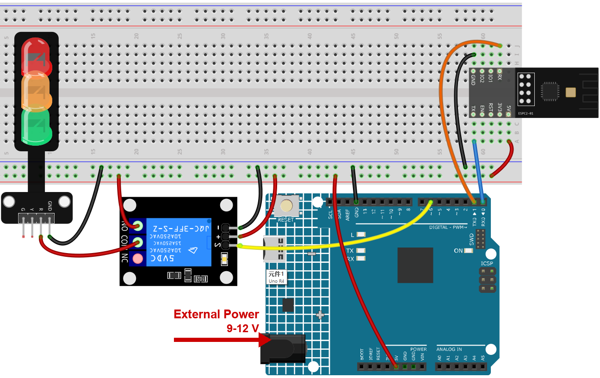
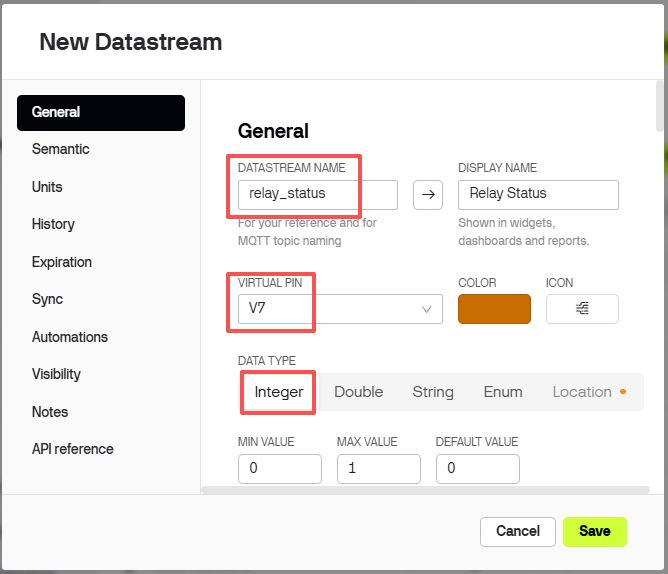
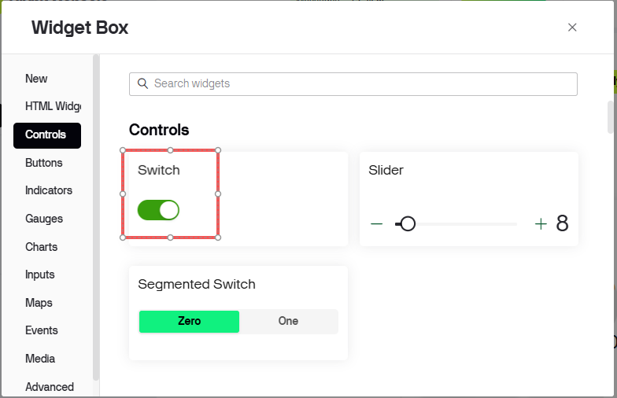
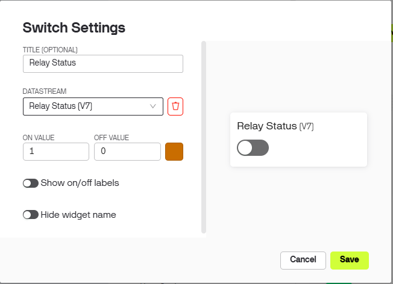
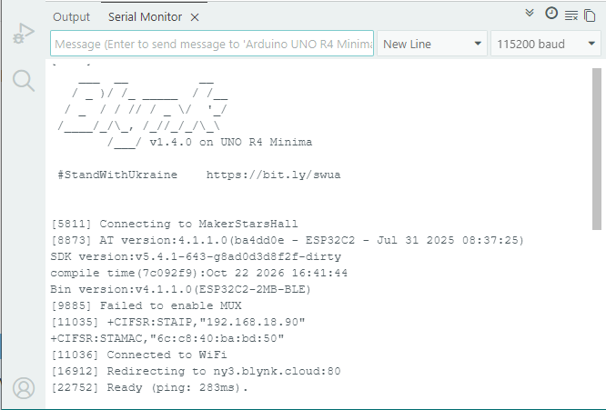
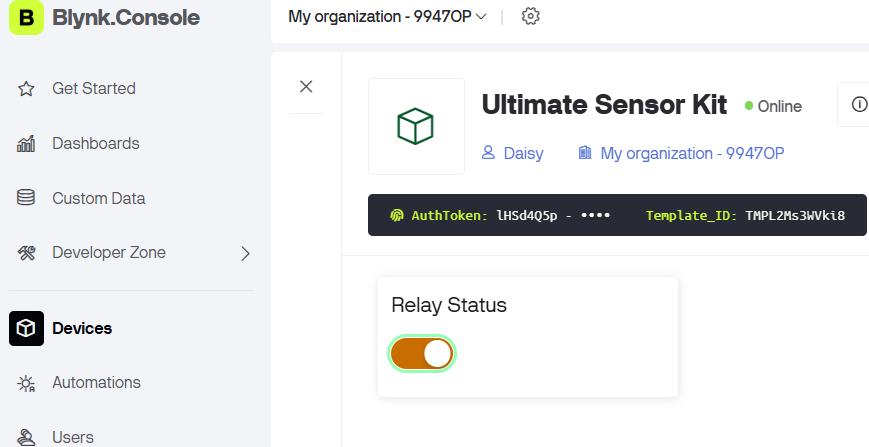

Note
Hello, welcome to the SunFounder Raspberry Pi & Arduino & ESP32 Enthusiasts Community on Facebook! Dive deeper into Raspberry Pi, Arduino, and ESP32 with fellow enthusiasts.
Why Join?
Expert Support: Solve post-sale issues and technical challenges with help from our community and team.
Learn & Share: Exchange tips and tutorials to enhance your skills.
Exclusive Previews: Get early access to new product announcements and sneak peeks.
Special Discounts: Enjoy exclusive discounts on our newest products.
Festive Promotions and Giveaways: Take part in giveaways and holiday promotions.
👉 Ready to explore and create with us? Click [here] and join today!
6. Remote Relay Controller with Blynk
This project aims to create a remote relay controller that can be operated through a virtual switch in the Blynk app. When the switch is turned on, it sets the digital pin connected to the relay to HIGH, and when it’s turned off, it sets the digital pin to LOW. This allows for easy control of the relay from a distance, effectively creating a remote switch.
1. Build the Circuit
Warning
The following example demonstrates using a relay to control an LED module. While you can connect the relay to other appliances in actual applications, extreme caution is required when dealing with HIGH AC voltage. Improper or incorrect use can lead to severe injury or even death. Therefore, it is intended for people who are familiar with and knowledgeable about HIGH AC voltage. Always prioritize safety.
Note
The module draws a high current at start-up, so make sure the 9 V battery or an external power supply is plugged into the DC jack of the R4 Minima.


2. Configure Blynk
Note
The template and the device were created once in Get Started with Blynk. Every project adds its datastreams to that same template, so each project occupies its own range of virtual pins. This project uses V7.
What this project sends to the cloud
One integer, relay_status. It is not a sensor reading: it mirrors the state of the
relay, so the app and the board always agree on whether the relay is on.
Add the datastream
Open Developer Zone -> My Templates, click Ultimate Sensor Kit.

Click Edit to open the template.

Click Datastreams, then Create New.

Fill in the form:
DATASTREAM NAME:
relay_statusDISPLAY NAME:
Relay StatusVIRTUAL PIN:
V7DATA TYPE: Integer
MIN
0, MAX1


Add the web dashboard
Click Dashboard, then Add Widget.

Drag a Switch widget onto the dashboard.

Click the three dots in the corner of the Switch and choose Settings.
Set Datastream to
Relay Status (V7).
Note
A Switch both shows and sets the value. Tapping it sends
1or0to the board; the board switches the relay and writes the same value back, so the switch never gets out of step - even if you tap it twice quickly.
Click Save.


3. Run the Code
Open the
06-Remote_relay_controller.inofile under the path ofultimate-sensor-kit\code\iot_project_espc201\wifi\06-Remote_relay_controller, or copy this code into Arduino IDE.The three Blynk lines were copied in the Get Started chapter. Every project of this kit uses the same device, so they never have to be changed - only the Wi-Fi settings below are project specific.
#define BLYNK_TEMPLATE_ID "TMPLxxxxxx" #define BLYNK_TEMPLATE_NAME "Ultimate Sensor Kit" #define BLYNK_AUTH_TOKEN "YourAuthToken"
Type the name and the password of your own Wi-Fi network.
char ssid[] = "your_ssid"; char pass[] = "your_password";
Select Arduino UNO R4 Minima and the right port, then click Upload.
Open the Serial Monitor at 115200. When the board reaches the cloud the log ends with
Ready, and every time you move the switch in the app a line appears here:[28358] Ready (ping: 285ms). The switch on Blynk has been turned on. The switch on Blynk has been turned off.
That echo is the quickest way to see that the app and the board are really talking.

Tap the switch: the relay clicks. Tap it again: it clicks back.
Note
The relay keeps its position after a power cut. When the board reconnects it asks the server for the last value (
Blynk.syncVirtual(V7)), so the relay returns to the state you left it in instead of always starting switched off.


4. Code explanation
Blynk account and libraries
The first three lines say which Blynk device this board belongs to. They come from the device page and are identical in every project of this kit.
#define BLYNK_TEMPLATE_ID "TMPL2Ms3WVki8" #define BLYNK_TEMPLATE_NAME "Ultimate Sensor Kit" #define BLYNK_AUTH_TOKEN "lHSd4Q5pXP7YKUovVfPZYZqC0UHVORY6" #define BLYNK_PRINT Serial // show Blynk's own log on the Serial Monitor #include <ESP8266_Lib.h> // sends the AT commands #include <BlynkSimpleShieldEsp8266.h> // Blynk on top of them
The serial port that talks to the module
The ESPC2-01 works as a modem: the sketch sends it AT commands. On the R4 it is wired to D0/D1, which is
Serial1, a hardware port, so 115200 works without bit errors.#define EspSerial Serial1 #define ESP8266_BAUD 115200 ESP8266 wifi(&EspSerial);
The function
espModuleInit()waits for the module to finish booting and then sendsATE0to switch the echo off. Without it, the module’s start-up log and the echoed commands get mixed into the replies and Blynk cannot read them.The relay pin
const int RelayPin = 6; int switchStatus = 0;
RelayPinis the pin that drives the relay module - D6 here.switchStatussimply keeps the last value the app sent, so the code can tell “on” from “off” in one place.Note
Some relay modules switch the other way round and close when the pin is LOW. If your relay clicks the opposite way to the switch in the app, swap
HIGHandLOWin the function below - nothing else changes.setup()
void setup() { pinMode(RelayPin, OUTPUT); digitalWrite(RelayPin, LOW); Serial.begin(115200); EspSerial.begin(ESP8266_BAUD); delay(10); espModuleInit(); Blynk.config(wifi, BLYNK_AUTH_TOKEN); Blynk.connectWiFi(ssid, pass); }
digitalWrite(RelayPin, LOW)right afterpinModematters: a pin that has just become an output could otherwise start HIGH for a moment and make the relay click at every power-up.loop()
void loop() { Blynk.run(); timer.run(); }
Blynk.run()keeps the connection alive. This project has nothing to measure, so the loop does no other work - but it still has to run as fast as possible.BLYNK_CONNECTED() - restore the last state
BLYNK_CONNECTED() { Blynk.syncVirtual(V7); }
This runs every time the board reaches the server, including after a power cut.
Blynk.syncVirtual(V7)asks for the stored value of the switch, and the server answers by callingBLYNK_WRITE(V7)- so the relay ends up in the state you left it in.BLYNK_WRITE(V7) - the switch does the work
BLYNK_WRITE(V7) { switchStatus = param.asInt(); if (switchStatus == 1) { Serial.println("The switch on Blynk has been turned on."); digitalWrite(RelayPin, HIGH); } else { Serial.println("The switch on Blynk has been turned off."); digitalWrite(RelayPin, LOW); } }
BLYNK_WRITE(V7)runs by itself whenever datastream V7 changes - you never call it fromloop().param.asInt()is the new value:1when the switch is on,0when it is off.The
Serial.printlnlines are only there for you; they let you watch the switch from the Serial Monitor.